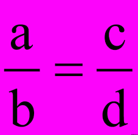
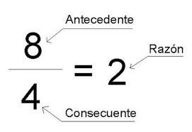
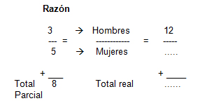
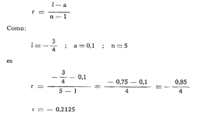
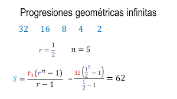

Razón
Una razón indica en forma de división la relación entre dos cantidades. Nos indica cuántas unidades hay en relación a las otras, y se suele indicar simplificando las fracciones.
Por ejemplo, si en un salón de clases tenemos 24 niñas y 18 niños, entonces lo representaremos de alguna de las siguientes formas:
24/18
24:18
Y como la fracción podemos simplificarla al dividirla entre 6, entonces tendremos:
4/3
4:3
Y se lee que existe una razón de 4 a 3, o de 4 por cada 3.
Cada uno de los valores de una razón tiene un nombre. El valor que está del lado izquierdo de la relación, se le llama antecedente , y al valor del lado derecho se le llama consecuente.
En este caso, la relación de niñas respecto a los niños es una relación de 4 a 3, o de 4 niñas por cada 3 niños.

Proporción
La proporción indica mediante una igualdad la comparación de dos razones. Para escribir una proporción, debemos tener en cuenta que los valores antecedentes, siempre estén del mismo lado, al igual que los consecuentes.
En nuestro ejemplo del salón de clases, podemos comparar la razón que tenemos, de 4 niñas por cada 3 niños, y podremos calcular cuántos niños hay en un salón en relación al número de niñas o viceversa. Para esto, en primer lugar escribiremos la proporción que ya conocemos:
4:3
Después, un signo de igualdad
4:3=
Y después la cantidad total, por ejemplo la del mismo salón, recordando que debemos respetar el orden del antecedente y del consecuente. En nuestro ejemplo, el antecedente será el número de niñas, y el consecuente el número de niños.
4:3=24:18
Para comprobar la igualdad de la proporción, se efectúan dos multiplicaciones. En una proporción, tomaremos como referencia el signo de igualdad. Los números que están más cercanos, se llaman centros, y los números más lejanos son los extremos. En nuestro ejemplo, los números 3 y 24 son los más cercanos al signo igual, por lo que son los centros. El 4 y el 18, son los extremos. Para comprobar que la proporción es correcta, el producto de la multiplicación de los centros debe ser igual al producto de la multiplicación de los extremos:
3 X 24 = 72
4 X 18 = 72
s

Proporción directa y proporción inversa
Las proporciones pueden expresar relaciones en que el aumento de la cantidad del antecedente aumenta la cantidad del consecuente. A esta
variación se le llama proporción directa. El ejemplo anterior es una proporción directa.
En una proporción inversa, el aumento de la cantidad en el antecedente, significa la disminución de la cantidad en el consecuente.
Por ejemplo, en una mueblería, 6 trabajadores hacen 8 sillones en 4 días. Si queremos saber cuántos trabajadores se necesitan para construir los 8 sillones en 1, 2 y 3 días, usaremos una proporción inversa.
Para determinarla, usaremos el número de trabajadores como cifra antecedente, y el número de días como cifra consecuente:
6:4=
Siguiendo el mismo orden, del otro lado de la igualdad tendremos como antecedente nuevamente el número de trabajadores, y como consecuente los días que tardarán. Tendremos algo como lo siguiente:
6:4 = ?:3
6:4 = ?:2
6:4 = ?:1
Para determinar la proporción inversa, multiplicaremos los factores de la razón conocida, en nuestro ejemplo, 6 y 4, y el resultado lo dividiremos entre el dato conocido de la segunda razón. Así, en nuestro ejemplo, tendremos:
6 X 4 = 24
24 / 3 = 8
24 / 2 = 12
24 / 1 = 24
Así tendremos las proporciones siguientes:
6:4 = 8:3
6:4 = 12:2
6:4 = 24:1
Con lo que podemos calcular que para producir los 8 sillones en tres días, necesitamos 8 trabajadores; para fabricarlos en dos días, necesitamos 12 trabajadores, y para hacerlos en 1 día, necesitamos 24 trabajadores.

Ejemplos de razones:
En una caja tenemos 45 canicas azules y 105 canicas rojas. La expresamos como 45:105 y dividiendo entre 15, tenemos que la razón es de 3:7 (tres por cada siete), o sea, tres canicas azules por cada siete canicas rojas.
En una clase de un colegio cada pelota es utilizada por cada equipo de cinco niños, o sea que tenemos cinco alumnos por cada pelota de fútbol. Tenemos entonces en este ejemplo de razón que la relación entre alumnos – pelotas es 5 a 1. Esta razón se escribe 5:1 y concluimos que existe una razón de cinco alumnos por cada pelota de fútbol.
En un estacionamiento hay coches de fábricas asiáticas y de fábricas americanas. En total hay 3060 coches, de los cuales, 1740 son de fabricación asiática y el resto, 1320, son de fabricación americana. Esto nos dará que la razón es de 1740/1320. Para simplificarla, la dividimos primero entre 10, lo que nos deja 174/132. Si ahora lo dividimos entre 6, tendremos la razón 29:22, o sea que en el estacionamiento hay 29 automóviles asiáticos por cada 22 automóviles americanos.

Ejemplos de proporciones:
Proporción directa:
En una tienda se venden dulces nacionales e importados, a razón de 3:2 Si sabemos que al día se vende 255 dulces nacionales, ¿Cuántos dulces importados se venden al día?
3:2=256:?
2 X 255 = 510
510 / 3 = 170 dulces importados.
3:2 = 256:170 (tres es a dos como 256 es a 170).
En una fiesta se invitaron a niños y niñas. Si sabemos que acudieron en una proporción de 6 niñas por cada 4 niños, y en la fiesta hay 32 niños ¿Cuántas niñas fueron?
6:4 = ?:32
32 X 6 = 192
192 / 4 = 48 niñas fueron a la fiesta.
6:4 = 48:32 (6 es a 4 como 48 es a 32)
Para armar una mesa, se necesitan 14 tornillos. ¿Cuántos tornillos necesitamos para armar 9 mesas?
14:1 = ?:9
14 X 9 = 126
126 / 1 = 126 tornillos son necesarios.
14:1 = 126:9 (14 es a 1 como 126 es a 9)
Proporción inversa:
Dos grúas mueven 50 contenedores en hora y media. ¿Cuántas grúas se necesitan para mover los 50 contenedores en media hora?
2:1.5 =?:.5
2 X 1.5 = 3
3 / .5 = 6 grúas son necesarias.
2:1.5 = 6:.5 (dos grúas es a una hora y media, como seis grúas son a media hora)
Si 4 alumnos realizan un trabajo en equipo en 45 minutos ¿Cuánto tiempo tardarán si el equipo está formado por 6, 8, 10 y 12 estudiantes?
Tendremos las siguientes proporciones:
a) 4:45 = 6:?
b) 4:45 = 8:?
c) 4:45 = 10:?
d) 4:45 = 12:?
4 X 45 = 180
a) 180 / 6 = 30 minutos
b) 180 / 8 = 22.5 minutos
c) 180 / 10 = 18 minutos
d) 180 / 12 = 15 minutos
Por lo que las proporciones serán:
a) 4:45 = 6:30
b) 4:45 = 8:22.5
c) 4:45 = 10:18
d) 4:45 = 12:15
